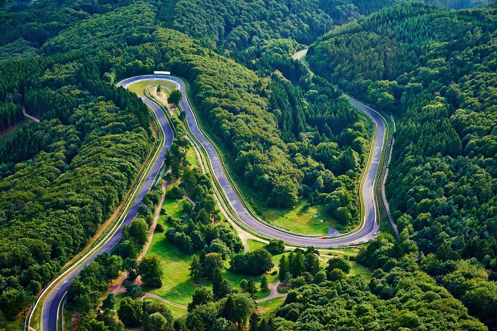
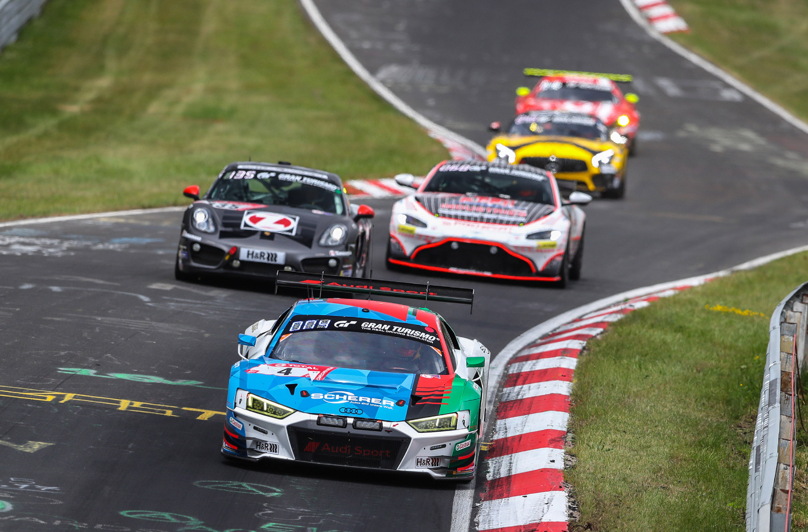
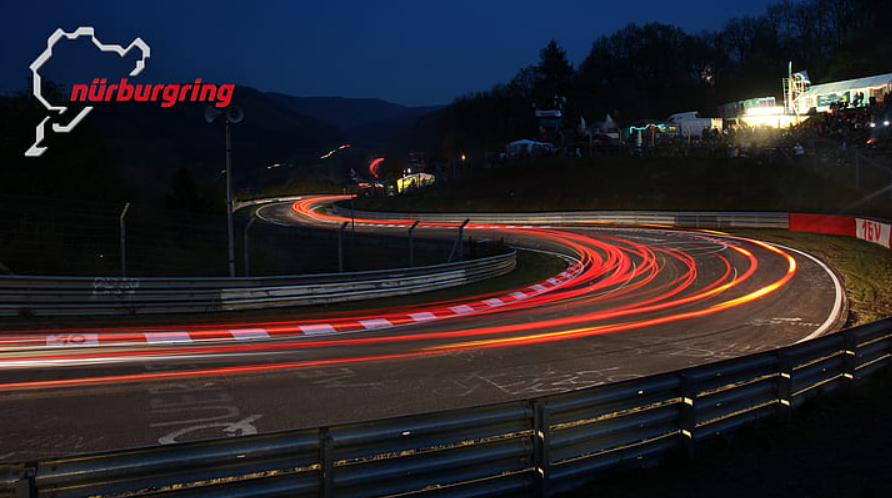
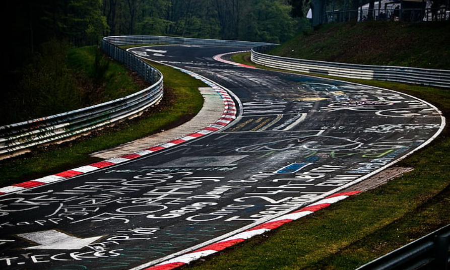

Welcome to Nürburgring: The Ultimate Racing Experience
About us
Discover the Nürburgring
Welcome to the Nürburgring, a legendary racing complex nestled in the picturesque
Eifel region of Germany. Known as the "Green Hell," the Nürburgring is an iconic
motorsports destination that attracts racing enthusiasts from around the globe.
History
Established in 1927, the Nürburgring has a rich history steeped in motorsports
excellence. The Nordschleife, a challenging and unforgiving 20.8-kilometer (12.9-mile)
track, is famous for its demanding corners and elevation changes. Over the years, the
Nürburgring has hosted numerous Formula One races, endurance events, and is a
popular testing ground for automotive manufacturers.

Experiences
Driving Experiences

For thrill-seekers and automotive enthusiasts, the Nürburgring offers a range of
driving experiences. Whether you're a seasoned racer or a novice looking to test your
skills, our track days and driving courses provide an unforgettable adventure on
the world-renowned Nordschleife.
Tourist Drives
Experience the Nürburgring like never before with our Tourist Drives. Open to the
public on selected days, you can take your own car or rent one locally to conquer the
challenging twists and turns of the Nordschleife. It's the perfect opportunity to feel the
adrenaline of this legendary track.
Events
Spectacular Racing Events
The Nürburgring hosts an exciting calendar of events throughout the year. From high-
stakes Formula One races to endurance challenges like the 24 Hours of Nürburgring,
there's always something happening at the circuit. Check our events calendar to plan
your visit and witness world-class motorsports action.

Facilities
State-of-the-Art Facilities
Our facilities are designed to cater to all your needs. Whether you're a driver, spectator,
or corporate guest, the Nürburgring offers modern amenities, hospitality suites, and
viewing areas to ensure a comfortable and enjoyable experience.

